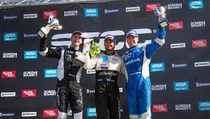

Prinsen storsatsar med ny superbil

Carl Philip satsar hårt inför årets racingsäsong
och sin egen superbil på 420 hästkrafter.
Han hyllas av sin stallchef efter förra säsongen och nystarten:
Han levererade mycket bättre prestanda än förväntat, säger Christian Dahl,
teamchef för Volvo Polestar Racing.
DÅ TÄVLAR CARL PHILIP:
- 7 juni på Göteborg City Arena.
- 13 juli i Falkenberg.
- 9 augusti i Östersund.
- 23 augusti i Knutstorp.
- 6 september på Solvalla.
- 9 20 september på Mantorp.
Förra säsongen tog prins Carl Philip ett kliv uppåt i sin racingkarriär när han bytte från Swedish GT och Porsche till STCC och Volvo Polestar Racing.
Nu går Carl Philip in på sin andra säsong för Volvo och redan nu planeras för hans värstingbil på 420 hästkrafter, en Volvo S60:
"Den ska presenteras i slutet av mars eller början av april, berättar Johan Meissner vid Polestar racing"
En av fem förare
Prins Carl Philip som började med racing 2008 i Porsche Carrera Cup hade en lyckad debut i STCC.
Förra säsongen kom han på 13:e plats av totalt 21 förare och bästa placeringen kom i juli Falkenberg då Carl Philip körde in på en sjundeplats.